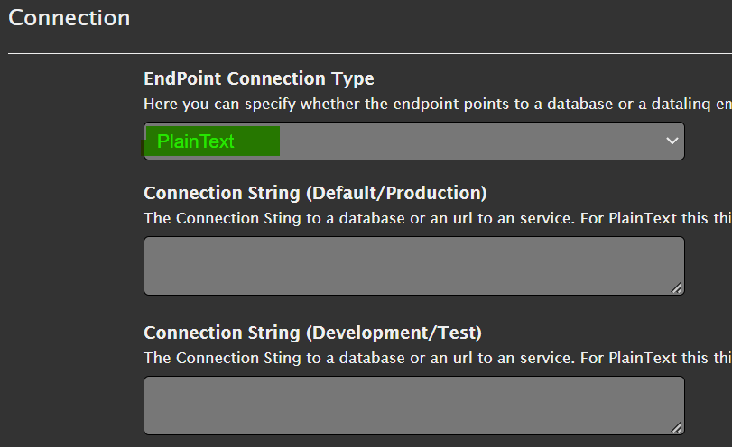
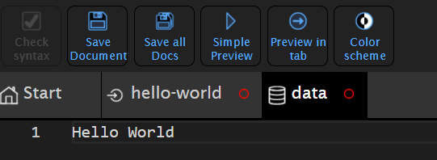
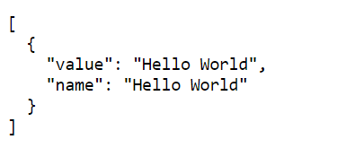
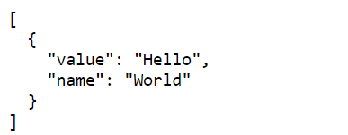
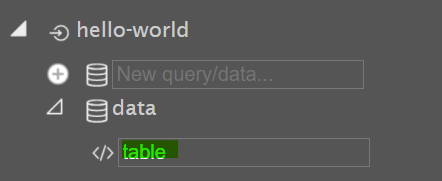
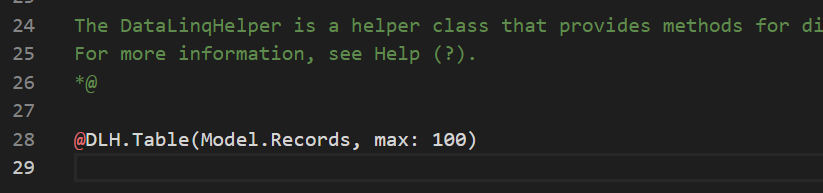
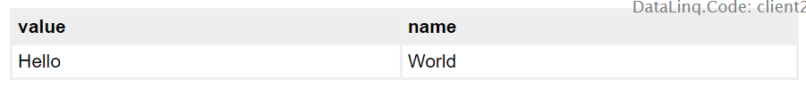

Hello World Example¶
In this example, the concept of a DataLinq project is explained using a small example. No connection to a database is required for this example. The “data” is entered as text.
Creating an Endpoint¶
The first step is to create an endpoint. As the name suggests, an endpoint is always the starting point of a query or a report. The endpoint defines where the data being queried is located (database, web service, text, …).
This is created via the DataLinq.Code interface, by choosing the name of a new endpoint and confirming it with Enter.
Note
Only certain characters are allowed for endpoint names: lowercase letters, numbers, and -.
Special characters should not be used, because the name of endpoints, queries, and views later
becomes part of the call URL.

After the endpoint is created, it appears at the top level of the tree. Clicking on the endpoint opens the properties dialog.
Here, the connection type is important for us. It specifies what kind of data is offered
via the endpoint. Since we don’t want to connect a database for Hello World, we use PlainText as the type:

Note
PlainText means that data is later entered line by line as text in the queries. Specifying a connection string is not needed for this connection type.
Creating a Query¶
The next step is to create a query that provides the data for our example.
To do this, expand the still-empty hello-world node in the tree view and enter a valid name in the
New Query/Data input field. Here, for example, data. The input is confirmed again with Enter:

Clicking on the newly created data node in the tree view shows an empty
editor window in the content area. Here, you enter the actual query that should provide the data
(for the endpoint connection type Database, this would, for example, be an SQL SELECT statement).
For endpoints of type PlainText, any text can now be entered here, where each line
(excluding empty lines) is interpreted as a record. Here, for example, let’s enter Hello World:

You could use the Simple Preview button from the toolbar to view the result of this query.
However, the changes we have made so far to the endpoint and the query have not yet been
saved (indicated by the red circle in the respective tab).
To save the changes, first click the Save all Docs button (or Save Document for the currently visible
document). Once the red circles in the tabs disappear, the result can be
opened with Simple Preview.
The result should look as follows:

Note
When you open the Preview of a query, the result is always a JSON with the corresponding data.
For PlainText, the data always becomes a value / name pair. Each line is a record.
If it is not specified exactly what value and what name are, both values are identical.
To specify value and name, this is done via a :. Everything before the : corresponds to value, everything after it
to name.
PlainText is thus very well suited for creating simple selection lists.
If we change the query to Hello:World and save the query, the preview result should
look as follows:

Creating a View/Report¶
In the last step, we want to make the data available as an HTML table. To do this, under
the query in the tree view, under New View..., enter a valid name and confirm with Enter,
e.g. table:

Clicking on the newly created view shows the Razor template for the new view in the content area:

By default, a DataLinqHelper method (@DLH) Table() is inserted into the template.
This simple function displays the data in a simple table.
If you now open this view via one of the Preview buttons, the result under Hello World
is shown as an HTML table:
